Acompañamiento respetuoso · 0–3 años · El Born, Barcelona
Infancia en movimiento
La Pandillada es un espacio de cuidado respetuoso para peques de 0 a 3 años, en grupo reducido de máximo 4 criaturas. Cada día salimos a descubrir la ciudad en nuestra cargobike: parques, playas, ludotecas y rincones del barrio.
- Máx. 4 peques
- 0–3 años
- Salidas diarias en cargobike
- Juego libre
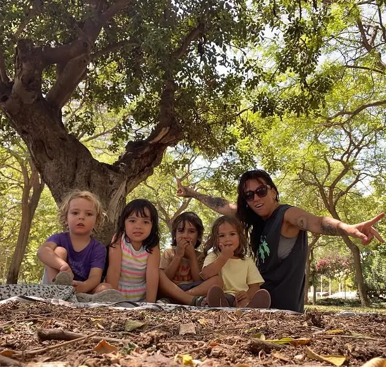
Tenemos 2 plazas libres. Escríbenos por mensaje privado y te enviamos el dossier con toda la información.
Pedir el dossierLa Pandi
Un grupo pequeño donde cada peque importa
Acompañamos criaturas de 0 a 3 años con cercanía, calma y respeto por el ritmo de cada una. Creemos que la infancia necesita moverse, jugar libremente y estar al aire libre para crecer con autonomía y seguridad.
- Grupo reducido: máximo 4 criaturas, acompañamiento cercano y personalizado.
- Cuidado respetuoso: miramos, esperamos y respetamos los tiempos de cada peque.
- Vida al aire libre: salimos cada día, llueva o haga sol.
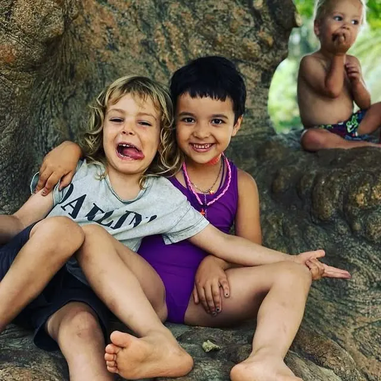
Salidas diarias
¡Te recogemos en nuestra cargobike!
Nuestra súper cargo bike es «la nave» con la que recorremos la ciudad. Cada mañana es una aventura: un lugar diferente que visitar, juegos espontáneos y descubrimientos por el camino.
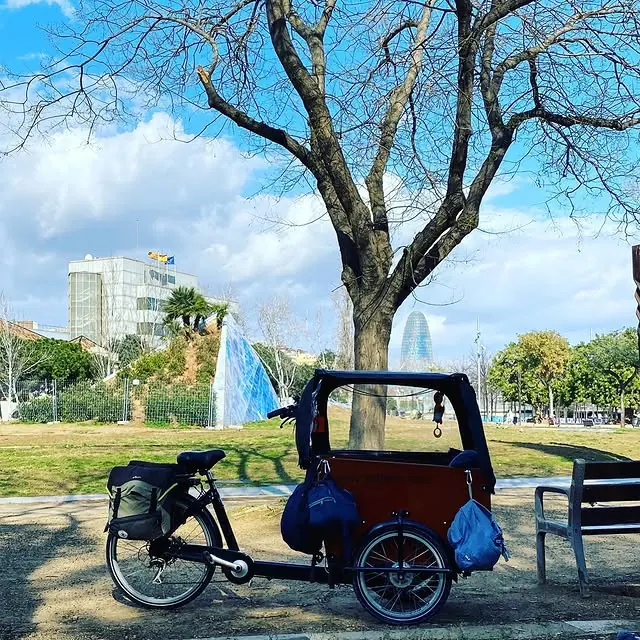
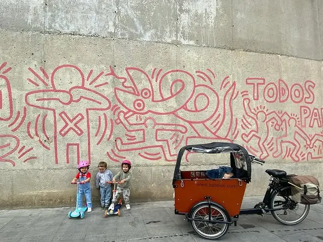
- Parques
- Playas
- Ludotecas
- Espacios del barrio
«La nave con la que recorremos la ciudad… Parques, playas, ludotecas: hay mucho por disfrutar.»
Horarios
Un día con La Pandi
Jornada de mañanas, de lunes a viernes, con servicio de recogida para que las familias lo tengan fácil.
-
Acogida tempranaRecogida desde las 8:45 con contratación previa (sujeto a disponibilidad).
-
Recogida en casaPasamos a recoger a tu peque en casa con la cargobike.
-
Jornada La PandilladaSalidas al exterior, juego libre, movimiento y acompañamiento respetuoso.
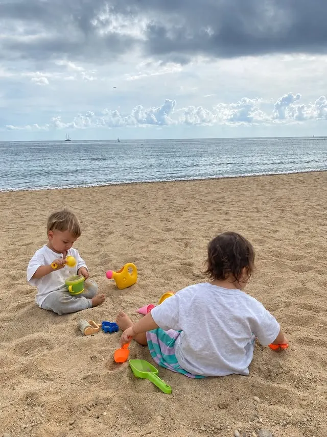
Nuestro día a día
Juego libre, todos los días
Llueva o haga sol: moverse, explorar, experimentar y disfrutar sin prisa.
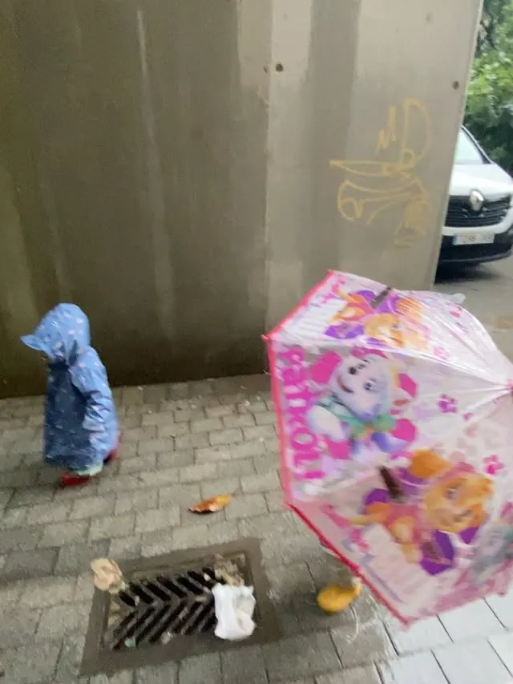
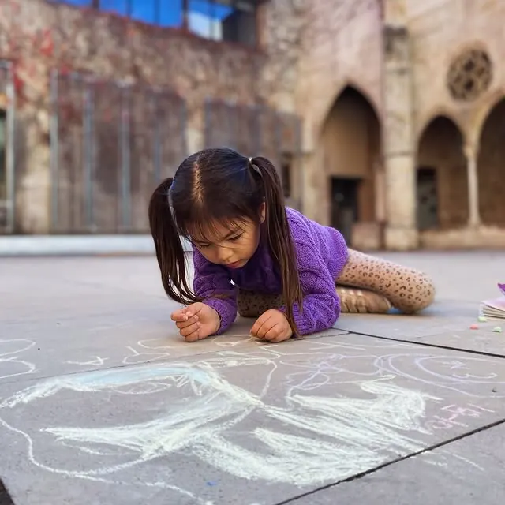
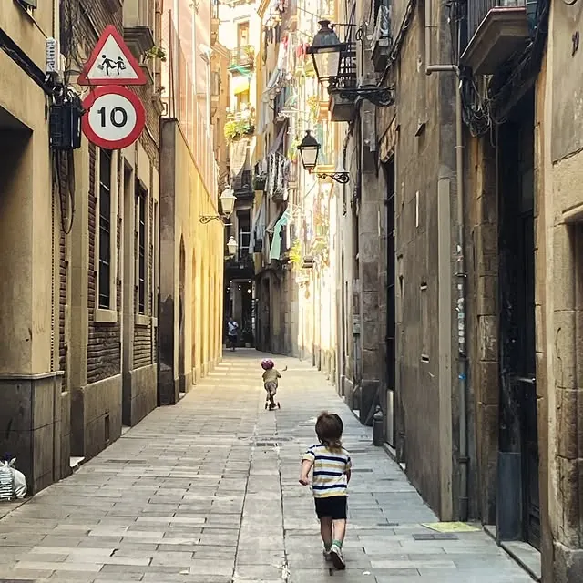
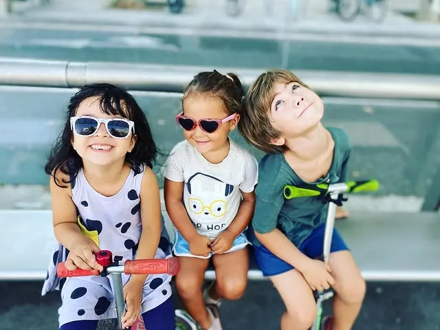
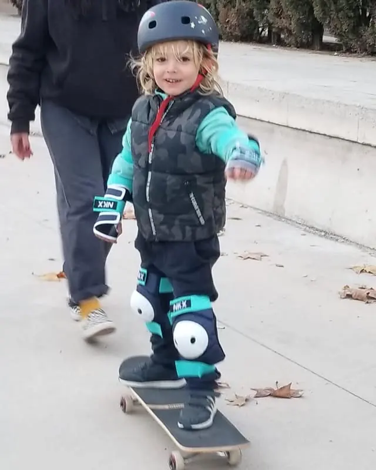
En qué creemos
Nuestros pilares
Cuatro ideas sencillas que guían cada día en La Pandillada.
Juego libre
El juego es la forma natural de aprender. Proponemos materiales y espacios; ellas y ellos deciden cómo jugar.
Movimiento
Trepar, correr, saltar, pedalear: el cuerpo en movimiento es la base de un desarrollo sano en la primera infancia.
Vida al aire libre
Parques, playa y barrio cada día. La lluvia no nos para: con la ropa adecuada, salir siempre merece la pena.
Comunidad
Un grupo pequeño donde nacen amistades de verdad, entre peques y entre familias del barrio.
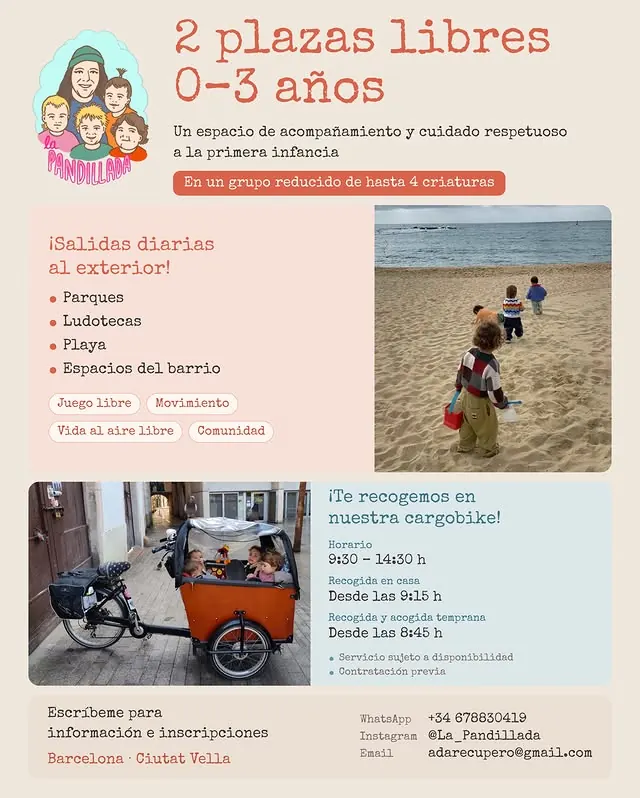
Inscripción
Plazas e inscripción
Ahora mismo tenemos 2 plazas libres. Escríbenos y te enviamos el dossier con toda la información, sin compromiso.
-
Escríbenos
Por WhatsApp, correo electrónico o mensaje directo de Instagram, como prefieras.
-
Recibe el dossier
Te enviamos el dossier con horarios, funcionamiento y todo lo que necesitas saber.